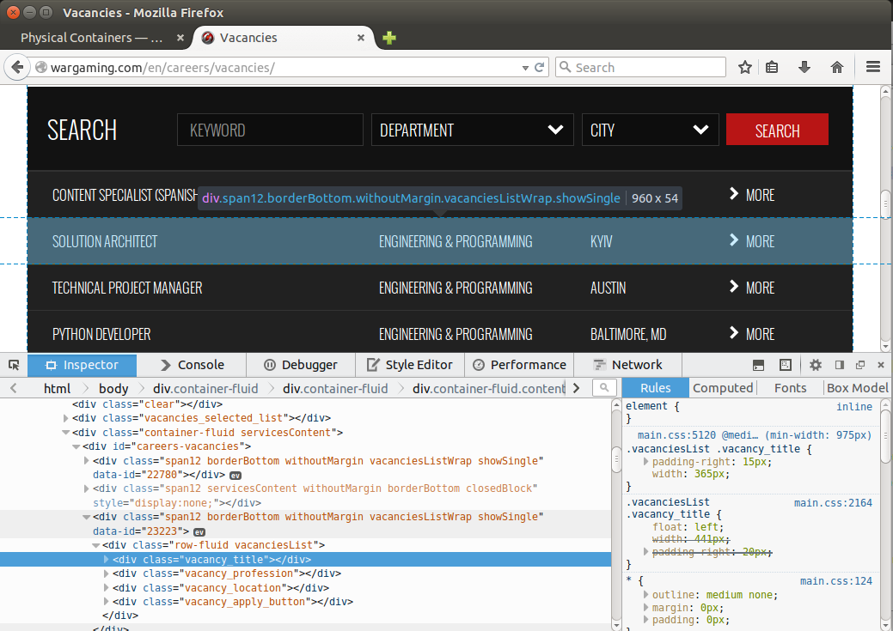

Containers¶
When you are specifying your classes you can perform search within them. Using this feature you can narrow search and handle dynamic pages without complex XPath.
In order to use within your custom objects just declare Find or Finds
within your classes the same way as they are declared within page objects.
Consider the page with the following DOM structure:
In order to perform search within each item in the list we can do the following:
from selenium.webdriver.common.by import By
from selenium.webdriver.remote.webelement import WebElement
from webium import Find, Finds, BasePage
class Vacancy(WebElement):
title = Find(by=By.CLASS_NAME, value='vacancy_title')
profession = Find(by=By.CLASS_NAME, value='vacancy_profession')
location = Find(by=By.CLASS_NAME, value='vacancy_location')
apply_button = Find(by=By.CLASS_NAME, value='vacancy_apply_button')
class VacanciesPage(BasePage):
vacancies_list = Finds(Vacancy, By.XPATH, '//div[@id="careers-vacancies"]/div[@data-id]')
def __init__(self):
super(VacanciesPage, self).__init__(url='http://wargaming.com/en/careers/vacancies/')
if __name__ == '__main__':
page = VacanciesPage()
page.open()
for vacancy in page.vacancies_list:
# search by CLASS_NAME='vacancy_title' is performed within one node
print 'Title: %s' % vacancy.title.text